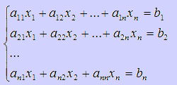
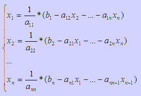
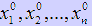
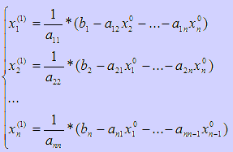
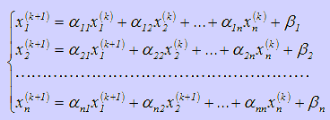
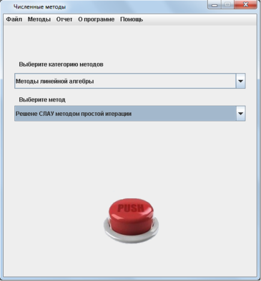
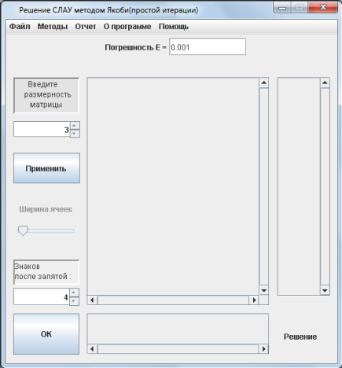
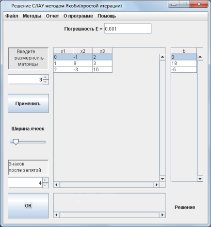
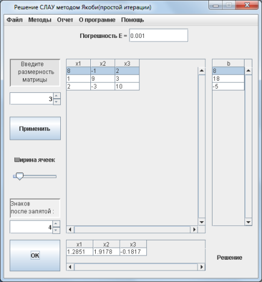
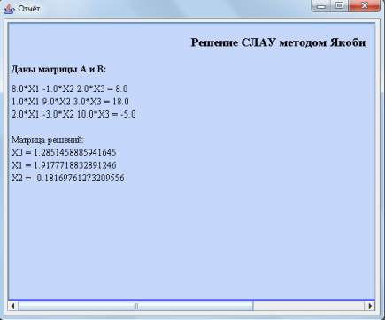

Решение СЛАУ методом простой итерации
Практическая часть
Теоретическая часть
Метод простой итерации применим, если система имеет диагональное преобладание, то есть диагональные элементы преобладают над остальными элементами в строках. Рассмотрим систему линейных уравнений:
Выразим х из каждого уравнения:

Возьмем начальные приближения  и подставим их в уравнения выше таким образом:

Продолжая, получаем высилительные формулы для метода простой итерации:

Количество итераций, за которые метод простых итераций сходится, зависит от необходимой точности. Оно вычисляется по формуле:

 - это необходимая точность, а К - число итераций, необходимых для решения СЛАУ с заданной точностью
Метод простых итераций сходится к решению, если любая норма матрицы В меньше 1.
- это необходимая точность, а К - число итераций, необходимых для решения СЛАУ с заданной точностью
Метод простых итераций сходится к решению, если любая норма матрицы В меньше 1.
Практическая часть
Пошаговые действия |
Пояснения к действиям |
|  | 1. Заходим в программу. Появляется окно, показанное на рисунке. Выбираем категорию методов "Методы линейной алгебры" Выбираем метод "Решение СЛАУ методом простой итерации". Нажимаем кнопку "PUSH". |
|  | 2. Появляется окошко, показнное на рисунке слева. В соответсвующем поле вы задаете размерность матрицы и задать количество знаков после запятой в корнях уравнений, которые получатся после решения системы. После чего необходимо нажать кнопку "Применить". |
|  | 3. На следующем этапе появляется таблица для ввода коэффициентов при неизвестных. Название столбцов подсказывает нам какие ячейки соответствуют неизвестным. Также можно выбрать ширину ячеек будущей таблицы для наглядности. В столбец b, расположенный на экранной форме слева, вводятся соотвествующие правые части уравнений. После того, как все данные были введены нужно нажать кнопку "Ок". |
|  | 4. После выполнения всех действий, описанных выше, внизу экранной формы в поле "Решение" программа выведет ответ. |
|  | 5. После того, как вы получили ответ, можно просмотреть отчет, где предоставлено поэтапное решение. Для этого необходимо в главном меню программы, расположенном на верху экранной формы выбрать пункт "Отчет/Просмотр отчета". Вы увидите окно, расположенное слева. Также можно сохранить этот отчет нажав кнопку главного меню "Отчет/Сохранить отчет". |
 |
6. Если решение примера может пригодится вам в будущем, вы можете сохранить его с помощью конпки меню "Файл/Сохранить". В окне, которое появится(оно показано на рисунке слева) необходимо выбрать папку, в которую он сохранится и написать название. |